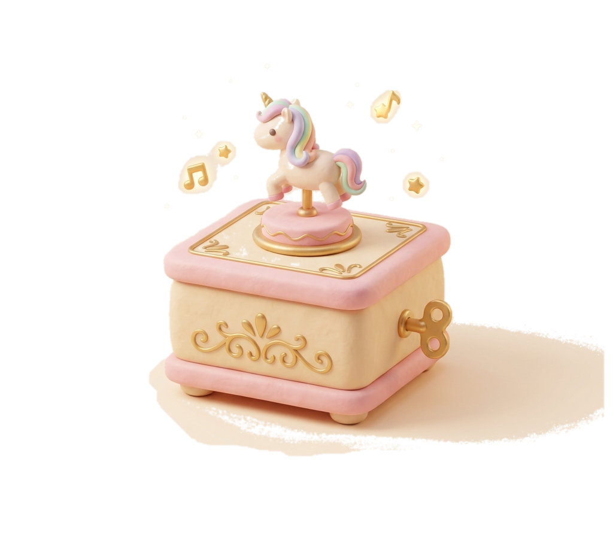

01 · SOUND ENGINE

The Lullaby Lab
A real generative music box synthesized with the Web Audio API. Pip winds the golden key to scatter calm pentatonic stars that guide baby monsters to dreamland.
“I build the dreams you fall asleep inside.”
Meet Pip, a gentle baby with a smooth, round skull face, glowing amber eyes, and a starry bedtime nightcap. Curious, sleepy, and easily delighted, Pip giggles at everything and hates quiet nights.
Pip's job is designing the soothing dreams, lullabies, and magical nightlights that help all the neighborhood's little creatures drift peacefully off to sleep.
Every day at the Midnight Nursery, Pip designs tangible bedtime magic. Click any project window to interact!

A real generative music box synthesized with the Web Audio API. Pip winds the golden key to scatter calm pentatonic stars that guide baby monsters to dreamland.

Handcrafted porcelain crescent lanterns for creatures afraid of the dark. Select an ambient dream hue below to illuminate the nursery.
The interactive rooftop airway Pip navigates each midnight on a soft cloud. Click on any neighborhood stop to dispatch a bundle of sweet dreams!
How a tiny skull baby with a starry nightcap became Midnight Nursery's favorite dream engineer.
On the quietest midnight the nursery ever recorded, a wandering star tumbled from the milky way and landed softly inside a wicker basket. The caretakers rushed over and found Pip: a sleepy baby with a round, polished skull face, smiling crookedly and blinking warm amber pinpricks at the ceiling.
“Pip wasn't scary at all — Pip just needed a warm nightcap.”Silence made the nursery babies restless. Assigned to nightwatch, Pip accidentally knocked over a drawer of music box gears and porcelain rattles. Instead of crying, Pip giggled and wound the broken springs together. The resulting tune was so tender and melodic that every little creature in the room drifted off to sleep within minutes.
“Pip turned accidental clatter into the world’s sweetest lullaby.”By morning, the nursery director handed Pip an official bronze badge: Junior Dream Engineer. Today, Pip works with moonbeams, velvet nightlights, and soothing frequencies. Wherever a night is too dark or too quiet, Pip arrives on a cloud to build a dream you can fall asleep inside.
“No monster is too scary, and no night is too dark for Pip.”Sign Pip's bedside guestbook wall. Your bedtime wish is saved right into Pip's dream memory.
You discovered the hidden lullaby frequency. Sweet dreams, nocturnal traveler!